# Loading the datasets
load("../R/df.Rdata")
# Sourcing scripts
source("../R/scripts.R")
source("../R/plots.R")The dataset includes 61 patients with non-muscle invasive bladder urothelial carcinoma, from whom 461 TMA spots were build from their corresponding tumors. The analysis carried out in this section includes features that are observed at the patient level (clinical and outcome features) and at the TMA level (pathologic features).
t <- "Distribution by patients' sex"
x <- df_clinical$sex
g_cat(x, t)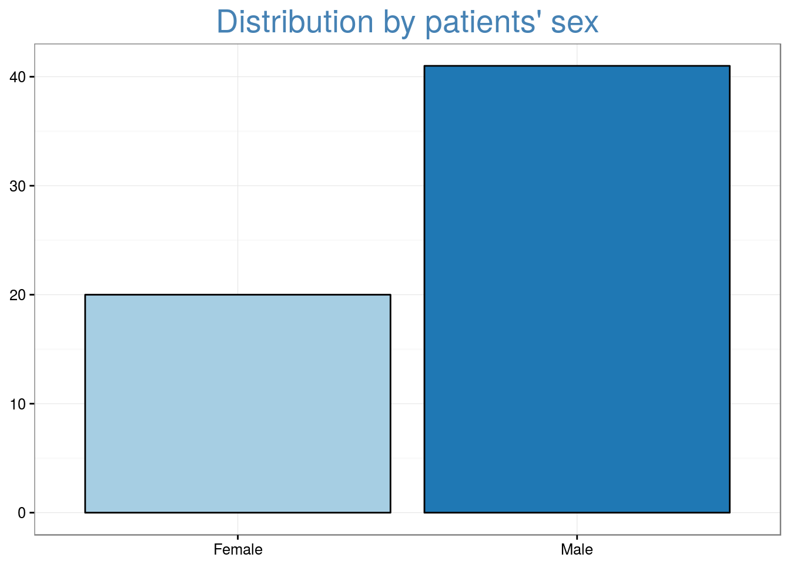
nice_table(x)| No. Cases (%) | |
|---|---|
| Female | 20 (33) |
| Male | 41 (67) |
t <- "Distribution by patients' age, in years"
x <- df_clinical$age_dx
g_num(x, title = t)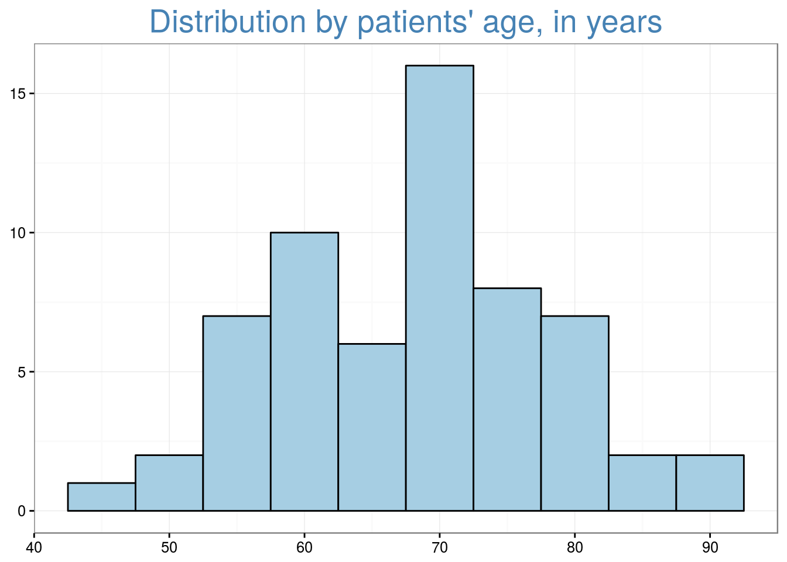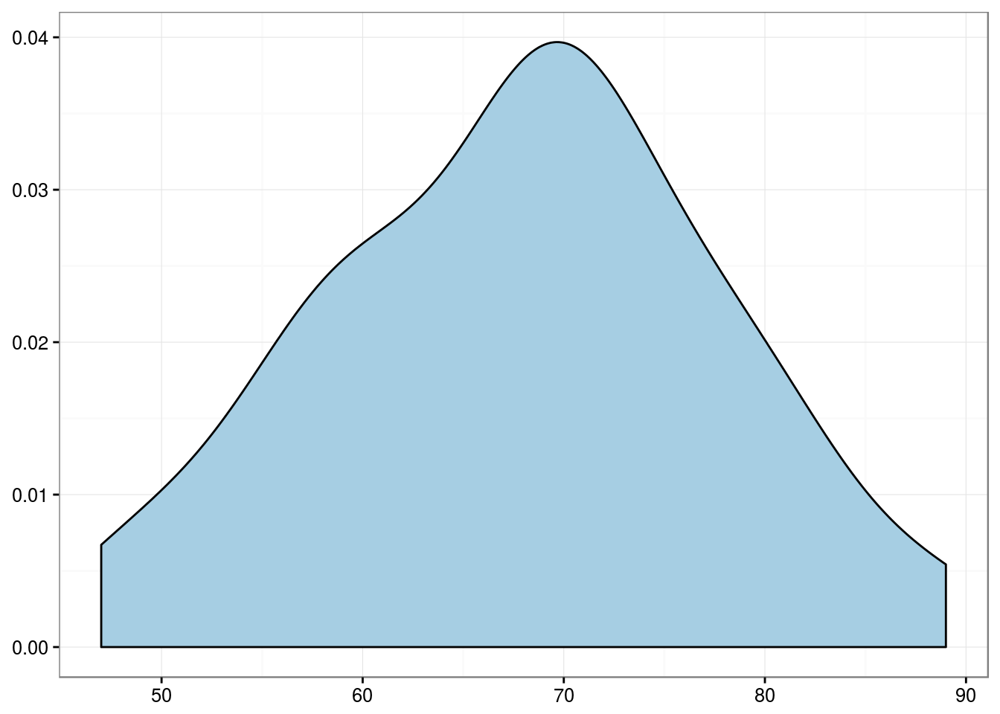
nice_table(x)| Values | |
|---|---|
| Mean | 67.9 |
| Standard Deviation | 9.8 |
| Median | 68 |
| Interquartile Range | 13 |
| Mininum | 47 |
| Maximum | 89 |
In order to describe tumor recurrence and progression at the patient level, we considered any positive event throughout follow-up as a positive event. In this scenario, a positive event means at least one positive event, v.g., a patient with tumor recurrence had at least one episode of tumor recurrence. Overall mortality refers to all patients who died, regardless of cause of death.
t <- "Distribution by follow-up length, in months"
x <- df_clinical$fu_mo
g_num(x, bin = 12, title = t)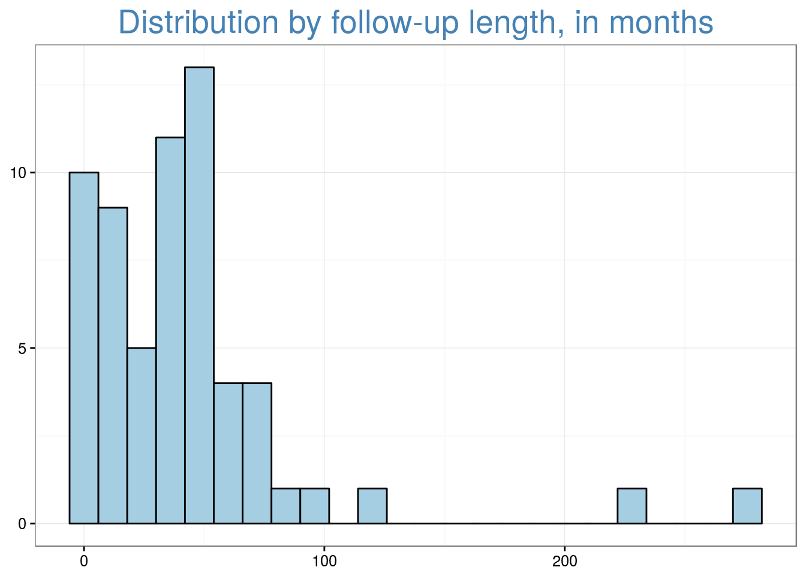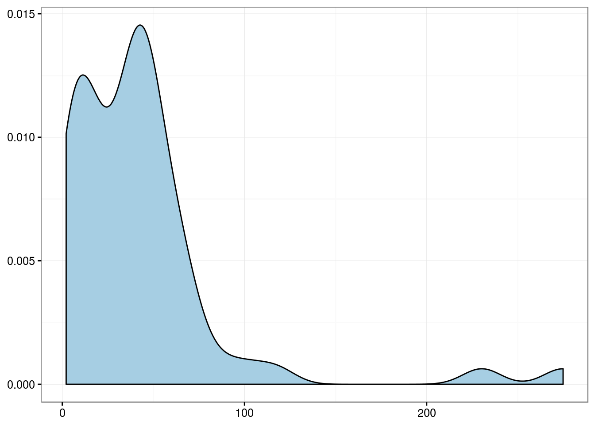
nice_table(x)| Values | |
|---|---|
| Mean | 42.6 |
| Standard Deviation | 46.5 |
| Median | 39.1 |
| Interquartile Range | 35.3 |
| Mininum | 2.1 |
| Maximum | 274.9 |
t <- "Distribution by tumor recurrence at any time"
x <- df_clinical$recurrence_anytime
g_cat(x, t)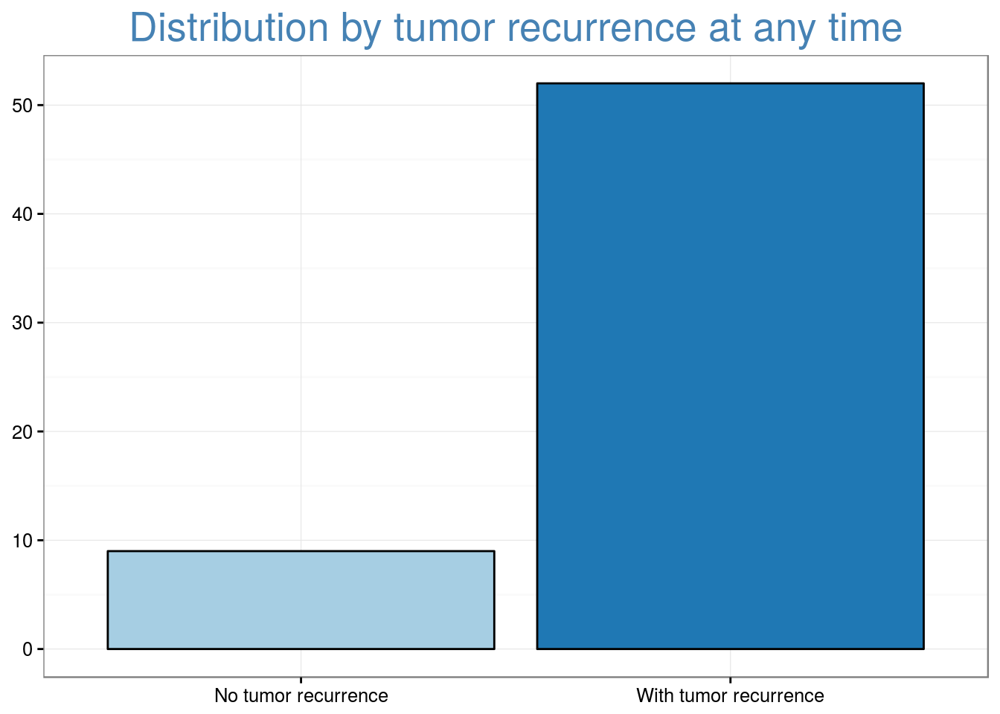
nice_table(x)| No. Cases (%) | |
|---|---|
| No tumor recurrence | 9 (15) |
| With tumor recurrence | 52 (85) |
t <- "Distribution by tumor grade progression at any time"
x <- df_clinical$grade_progression_anytime
g_cat(x, t)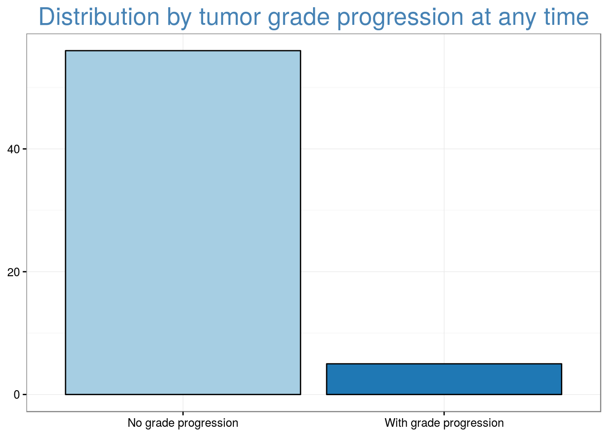
nice_table(x)| No. Cases (%) | |
|---|---|
| No grade progression | 56 (92) |
| With grade progression | 5 (8) |
t <- "Distribution by tumor stage progression at any time"
x <- df_clinical$stage_progression_anytime
g_cat(x, t)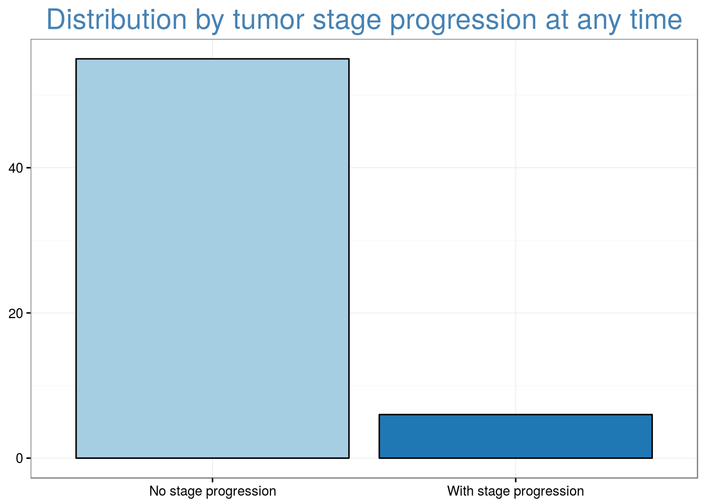
nice_table(x)| No. Cases (%) | |
|---|---|
| No stage progression | 55 (90) |
| With stage progression | 6 (10) |
t <- "Distribution by overall mortality"
x <- df_clinical$death
g_cat(x, t)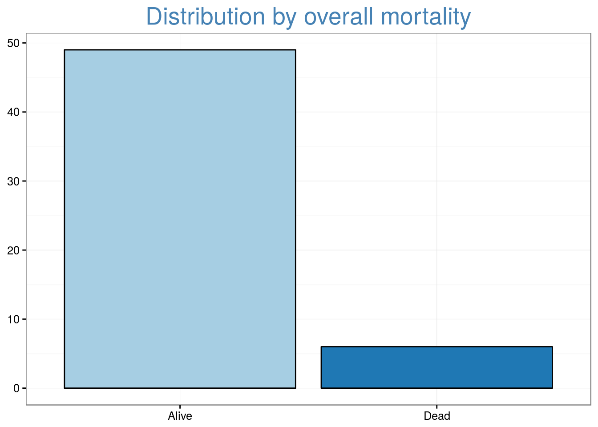
nice_table(x)| No. Cases (%) | |
|---|---|
| Alive | 49 (89) |
| Dead | 6 (11) |
For the histologic diagnosis, “Nontumor” includes normal urothelium and papillary hyperplasia, “CIS” includes carcinoma in situ and dysplasia, “LG” and “HG” mean low-grade and high-grade noninvasive papillary urothelial carcinoma, respectively.
t <- "Distribution by histologic diagnosis of TMA spots"
x <- df_tma$histo_dx
g_cat(x, t)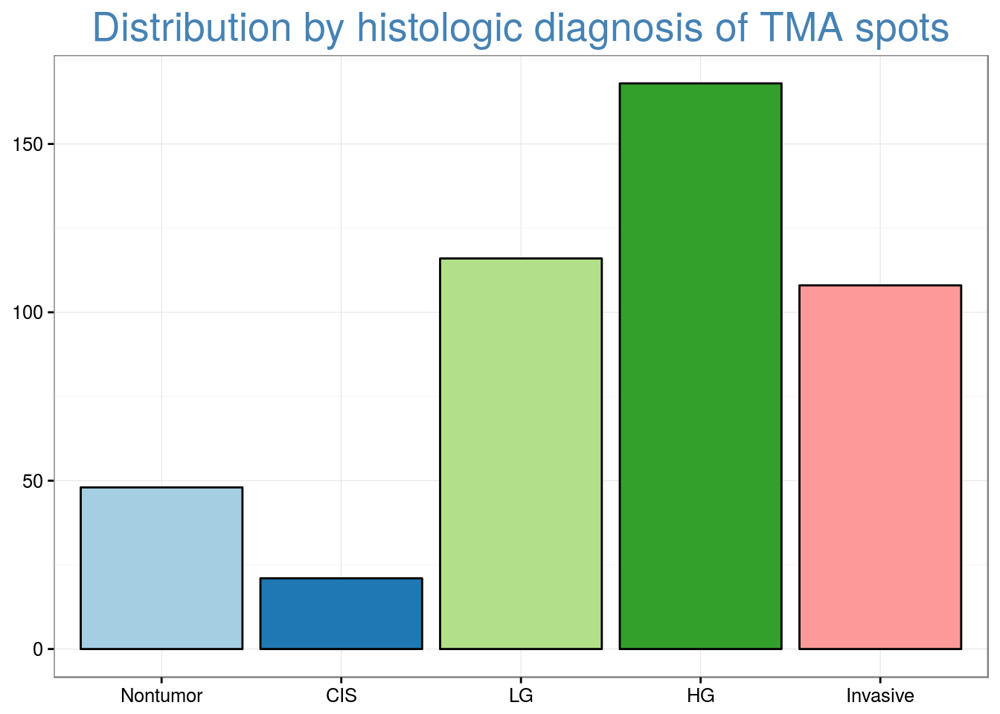
nice_table(x)| No. Cases (%) | |
|---|---|
| Nontumor | 48 (10) |
| CIS | 21 (5) |
| LG | 116 (25) |
| HG | 168 (36) |
| Invasive | 108 (23) |
t <- "Distribution by pT stage at TMA spots"
x <- df_tma$pt_stage
g_cat(x, t)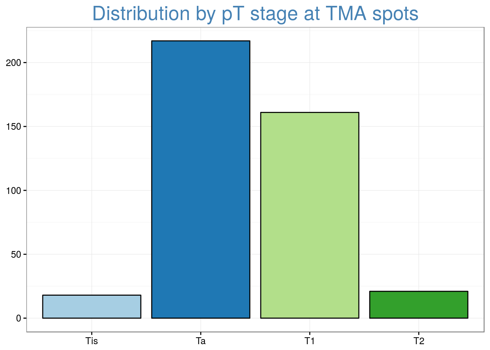
nice_table(x)| No. Cases (%) | |
|---|---|
| Tis | 18 (4) |
| Ta | 217 (52) |
| T1 | 161 (39) |
| T2 | 21 (5) |
t <- "Distribution by host inflammatory response at TMA spots"
x <- df_tma$host_response
g_cat(x, t)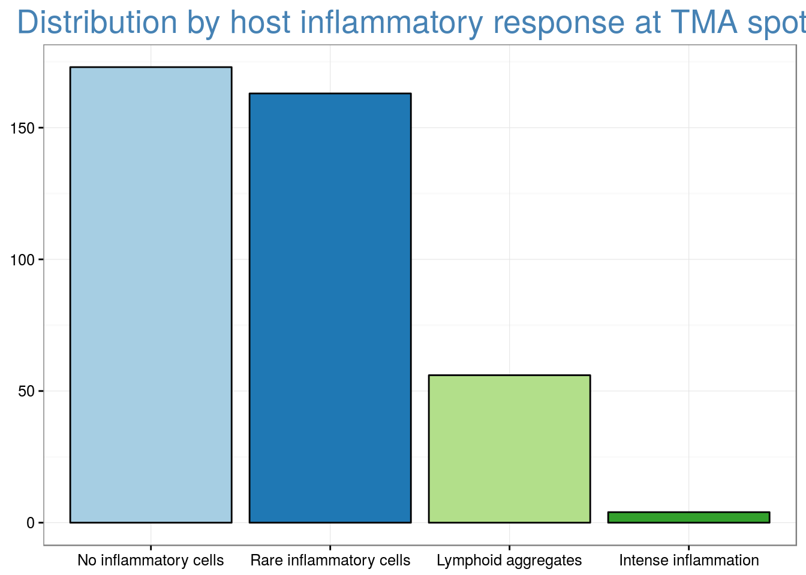
nice_table(x)| No. Cases (%) | |
|---|---|
| No inflammatory cells | 173 (44) |
| Rare inflammatory cells | 163 (41) |
| Lymphoid aggregates | 56 (14) |
| Intense inflammation | 4 (1) |